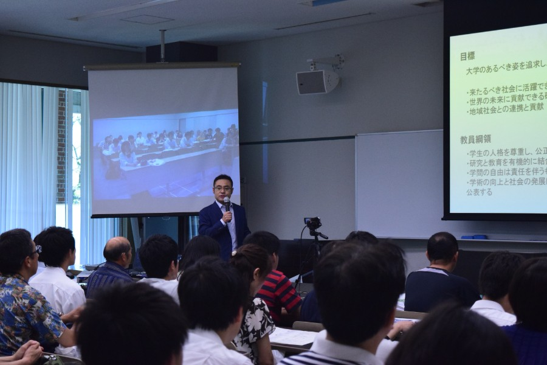
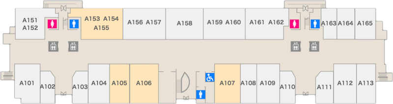
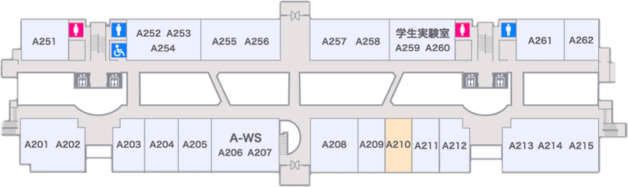
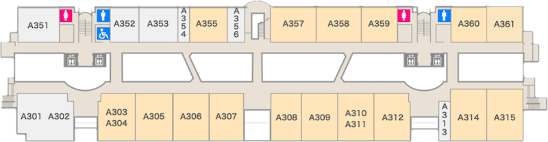

普段は立ち入ることのできない研究室を一般公開します。
各研究室の特徴をアピールする企画・展示が
たくさん用意されています。
是非一度、研究室を見学されてはいかがでしょうか。
| 教員 | テーマ | 場所 |
|---|---|---|
| 竹内 聖悟 | ゲームプログラミング: 計算機にどう考えさせるのか | A105 |
| 門田 宏 | MRIでヒトの脳を覗いてみよう | A155 |
| 門田 宏 | 賢い？愚か？貴方の身体と学習能力 | A210 |
| 植田 和憲 | 無線ネットワークで三段跳びすればどこまでいける？ | A303 |
| 清水 明宏 | あなたの暮らしを守るセキュリティ技術 | A305 |
| 繁桝 博昭 | 3D知覚とバーチャルリアリティ体験 | A306 |
| 妻鳥 貴彦 | ICTを使った教育のこれから | A307 |
| 篠森 敬三 | 視覚の不思議 ～体験型エイムズの部屋 など～ | A308 |
| 吉田 真一 | 連想するコンピュータ ～類似画像検索～ | A309 |
| 松崎 公紀 | ゲームプログラミングの研究課題 ～コンピュータ大富豪～ | A310 |
| 岩田 誠 | 超高速省エネコンピュータチップの新技術 | A312 |
| 浜村 昌則 | 筋トレTeleコミュニケーション | A314 |
| 任 向実 | ネクストジェネレーション ～インタフェース界に現れた風雲児～ | A315 |
| 高田 喜朗 | さわってみようプログラミング | A355 |
| 福本 昌弘 | ICTで災害にそなえよう | A357 |
| 敷田 幹文 | 人にやさしい未来のコミュニケーション支援 | A358 |
| 横山 和俊 | 雲の中のコンピュータ | A359 |
| 栗原 徹 | 画像処理技術が支えるメディアアート | A360 |
| 鵜川 始陽 | IoTプログラミングを簡単にする技術 | A361 |
各分野のエキスパートである先生方の授業を
特別に体験することができます。
この機会に、大学の授業を体験してみませんか？
また、今年は平成32年度AO入試の参考問題解説を行います。
未来の高知工科大生のご来訪をお待ちしています。
| 28日 | 29日 | |
|---|---|---|
| 11:40 ｜ 12:00 |
情報学群説明会 （情報通信技術者を目指す諸君へ） |
情報学群説明会 （情報通信技術者を目指す諸君へ） |
| 13:00 ｜ 13:30 |
バーチャルリアリティでヒトの知覚特性を探る 講師：繁桝 博昭 |
情報通信の未来 ～人にやさしいコミュニケーション～ 講師：敷田 幹文 |
| 13:40 ｜ 14:10 |
情報科学とボードゲーム 講師：竹内 聖悟 |
情報を伝えるメディアのはたらき 講師：福本 昌弘 |
| 14:20 ｜ 14:50 |
未来の情報通信技術者のための数学 〜平成32年度AO入試参考問題解説（数学(2)）〜 講師：鵜川 始陽 |
未来の情報通信技術者のための数学 〜平成32年度AO入試参考問題解説（プログラミング）〜 講師：高田 喜朗 |

情報学群のオープンキャンパスが行われる。
高知工学大学教育研究棟Aのフロアマップを掲載しています。

| A105 | ゲームプログラミング: 計算機にどう考えさせるのか |
| A106 | 情報学群体験授業 |
| A107 | 情報学群相談コーナー |
| A155 | MRIでヒトの脳を覗いてみよう |

| A210 | MRIで人の脳をのぞいてみよう |

| A303 | 無線ネットワークで三段跳びすれば どこまでいける？ | A314 | 筋トレTeleコミュニケーション |
| A305 | あなたの暮らしを守るセキュリティ技術 | A315 | ネクストジェネレーション ～インタフェース界に現れた風雲児～ |
| A306 | 3D知覚とバーチャルリアリティ体験 | A355 | さわってみようプログラミング |
| A307 | ICTを使った教育のこれから | A357 | ICTで災害にそなえよう |
| A308 | 視覚の不思議 ～体験型エイムズの部屋 など～ | A358 | 人にやさしい未来のコミュニケーション支援 |
| A309 | 連想するコンピュータ ～類似画像検索～ | A359 | 雲の中のコンピュータ |
| A310 | ゲームプログラミングの研究課題 ～コンピュータ大富豪～ | A360 | 画像処理技術が支えるメディアアート |
| A312 | 超高速省エネコンピュータチップの新技術 | A361 | IoTプログラミングを簡単にする技術 |